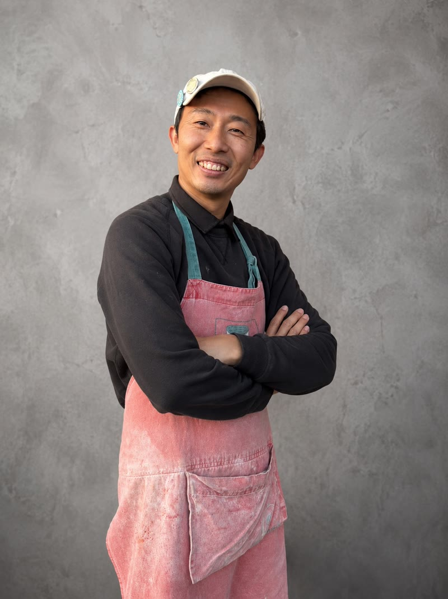
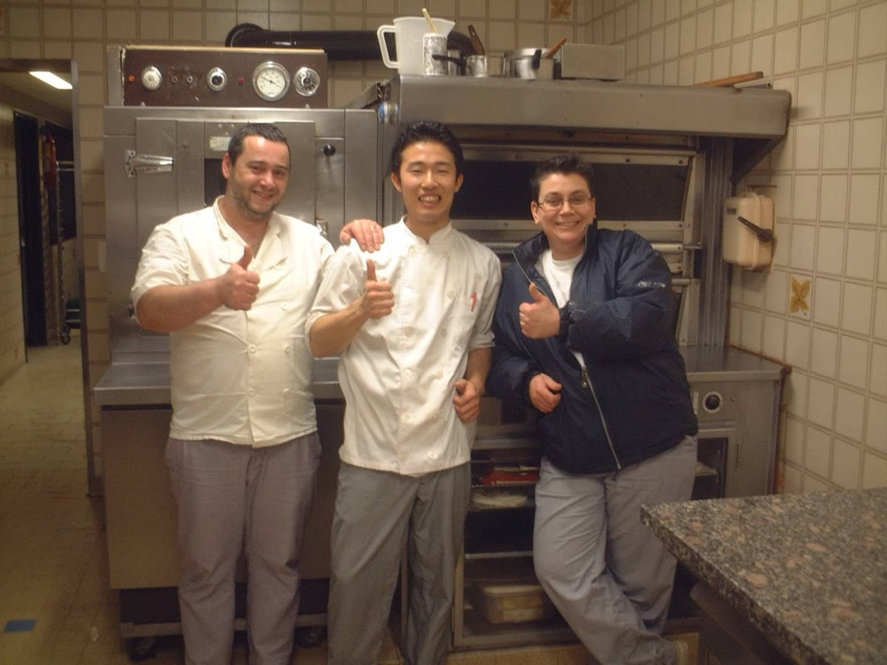
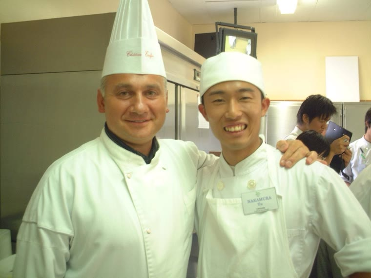
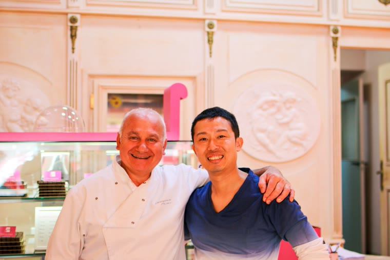

創作ピザとスイーツのお店「るべりえ」の
店主・中村の紹介です。

店主の中村は、元パティシエです。
お菓子作りの経験があるからこそ、スイーツピザとスイーツ揚げピザは、るべりえの得意分野のひとつです。
群馬県産小麦100%の生地で作る創作ピザとスイーツのお店として、邑楽町の赤いコンテナで営業して、今年で10年目になりました。
最近は、ラジオ番組や動画の制作にも取り組んでいます。
パティシエ時代には、フランスでの現地研修も経験しました。

フランスでの研修時代。中央が中村です。
開店後にはフランスを再訪して、研修先のシェフとも再会しました。


左：研修時代、研修先のシェフと。右：るべりえ開店後に再会した時です。